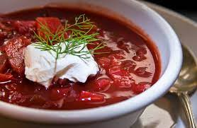

Borscht Recipe

Description:
A soup full of beets, carrots, potatoes,and eveything else that is deliciousness.
This soup will go great in the winter or in the summer.
Best served with sour cream or even like ol Putin would want with mayo and then some yummy black bread.
Ingredients
- 2 Cups of Chopped Carrots
- 2 Cups of Chopped Beets
- 2 Cups of Chopped Onions
- 2 Cups of Chopped Cabbage
- 4 Cups of Beef Broth
- 1 can of diced tomatoes, undrained
- 1/2 tsp salt
- 1/2 tsp dilweed
- 1/4 tsp pepper
- Sour cream a must
- bay leaves(optional)
Steps
- Get a large sauce pan
- combine beets,carrots,onions and broth
- bring to a boil, then turn off the heat and allow to simmer for 30 min
- Add tommoatoes and cabbage allowing to simmer for 30 minutes